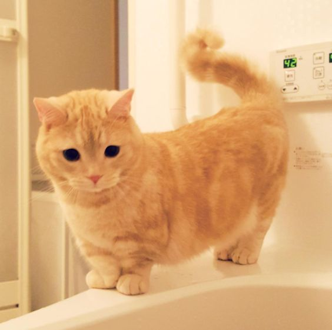
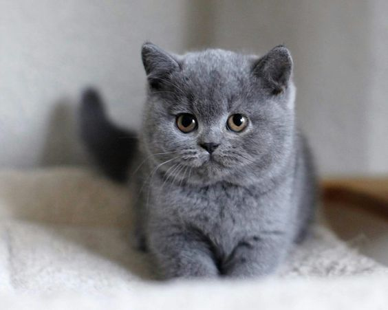
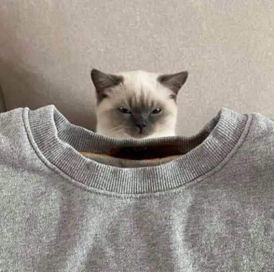

⭐ ⭐ ⭐ CATS ⭐ ⭐ ⭐
|
♡ Profile ♡ |
♡ Breed ♡ |
♡ About Me ♡ |
|  |
Munchkin Cat |
Munchkin cats are known for their cute and short legs. They are playful and easy to train partners. Even with their tiny size, they can be as active and energetic like any other cat. |
|  |
British Shorthair |
British shorthair cats are must have companions. They are also great for single people since these cats can play well on their own. British shorthairs make sure that they have a close bond with every member in your family. |
|  |
Ragdoll |
Sociable, affectionate, and bold would be the three perfect words to describe this kitty. They may be large in size but they actually have a calm personality. Ragdoll cats are also popular among celebrities like Taylor Swift and Blackpink Lisa. These cats love it the most when when they are in their owner's arms which makes them another must have companion in our list. |